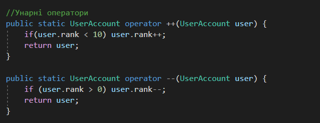
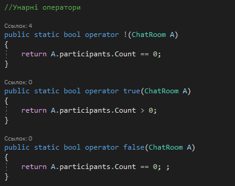
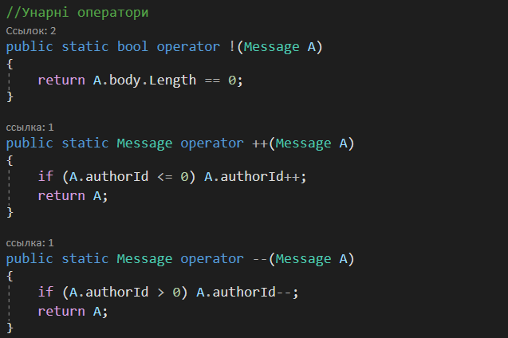
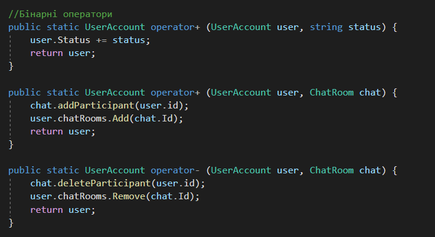
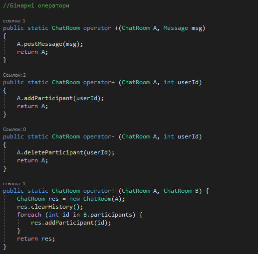
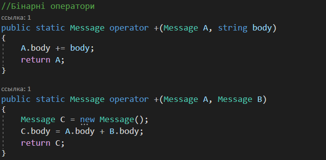
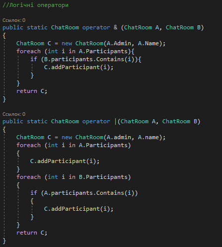
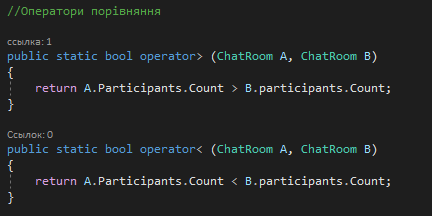
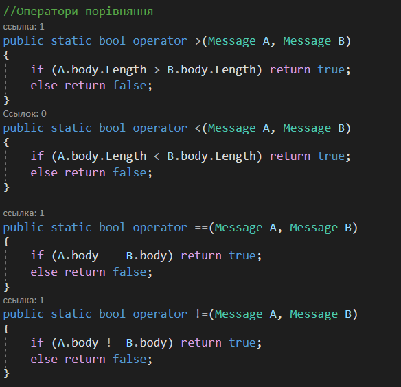

UML-діаграма класів

Тема: ПЕРЕВАНТАЖЕННЯ УНАРНИХ, БІНАРНИХ, ЛОГІЧНИХ ОПЕРАТОРІВ,ОПЕРАТОРІВ ПОРІВНЯННЯ
Мета: придбати практичні навички роботи реалізації методів перевантаження унарних, бінарних, логічних операторів, операторів порівняння.
Постановка задачі:
Виконали cтуденти 2 курсу групи ІП-93. Рік навчання 2021
public static bool operator! (ChatRoom)
Оператор визначає, чи пустий перелік учасників чата
public static bool operator true(ChatRoom)
Метод повертає позитивне значення, якщо кількість учасників чата > 0
public static bool operator false(ChatRoom)
Метод повертає позитивне значення, якщо кількість учасників чата == 0
public static ChatRoom operator+ (ChatRoom, int)
Оператор дозволяє додати учасника в чат
public static ChatRoom operator- (ChatRoom, int)
Оператор дозволяє видалити учасника з чата
public static ChatRoom operator+ (ChatRoom, Message)
Оператор дозволяє додати повідомлення в чат
public static bool operator> (ChatRoom, ChatRoom)
Оператор дозволяє видалити учасника з чата
public static bool operator< (ChatRoom, ChatRoom)
Оператор дозволяє видалити учасника з чата
public static ChatRoom operator & (ChatRoom, ChatRoom)
Метод повертає новий чат з перетином множин учасників чатів
public static ChatRoom operator | (ChatRoom, ChatRoom)
Метод повертає новий чат з об'єднанням множин учасників чатів
public static UserAccount operator ++(UserAccount user)
Оператор дозволяє збільшити ранг користувача на 1
public static UserAccount operator --(UserAccount user)
Оператор дозволяє зменшити ранг користувача на 1
public static UserAccount operator+ (UserAccount user, string status)
Оператор дозволяє додати текст до статусу користувача
public static UserAccount operator+ (UserAccount user, ChatRoom chat)
Оператор дозволяє додати учасника в чат
public static UserAccount operator- (UserAccount user, ChatRoom chat)
Оператор дозволяє видалити учасника з чата
public static bool operator >(UserAccount user1, UserAccount user2)
Оператор дозволяє порівнянти ранг користувачів
public static bool operator >(UserAccount user1, UserAccount user2)
Оператор дозволяє порівнянти ранг користувачів
public static Message operator ++(Message)
Оператор дозволяє збільшити id автора повідомлення на 1
public static Message operator --(Message)
Оператор дозволяє зменшити id автора повідомлення на 1
public static bool operator !(Message)
Оператор визначає, чи пусте тіло повідомлення
public static bool operator +(Message, body)
Оператор дозволяє додавати текст до повідомлення
public static bool operator +(Message, Message)
Оператор дозволяє зливати два повідомлення в одне
public static bool operator <(Message, Message)
Оператор дозволяє порівняти розмір повідомлень
public static bool operator >(Message, Message)
Оператор дозволяє порівняти розмір повідомлень
public static bool operator ==(Message, Message)
Оператор дозволяє дізнатись чи однакові повідомлення
public static bool operator !=(Message, Message)
Оператор дозволяє дізнатись чи однакові повідомлення
Клас UserAccount
Клас ChatRoom
Клас Message
Клас UserAccount
Клас ChatRoom
Клас Message
Клас ChatRoom
Клас UserAccount

Клас ChatRoom
Клас Message
